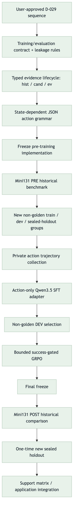
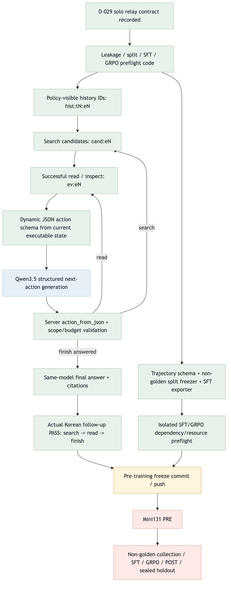

Solo relay-shot closeout. Full D-029 remains PARTIAL; 3a/3b are matched.


| Edge | Status | Evidence / next |
|---|---|---|
| Contract → typed evidence lifecycle | MATCHED | hist/cand/ev + tests |
| State → executable grammar → Qwen | MATCHED | llguidance compile + live run |
| Explicit follow-up → scoped answer | MATCHED_SCOPED | search → read → finish, invalid 0 |
| Training skeleton | MATCHED_SCOPED | split/leakage/SFT/GRPO preflight |
| Freeze → Mini131 PRE | GAP | EVO35.3c |
| Collection → SFT → GRPO → POST/holdout | GAP | downstream relay units |
| Unit | Status | Score |
|---|---|---|
| EVO35.3a | DONE | 10 |
| EVO35.3b | DONE | 11 |
| EVO35.3c | NEXT | 9 |
| EVO35.3d | NOT_STARTED | 7 |
| EVO35.3e | NOT_STARTED | 6 |
| EVO35.4 | NOT_STARTED | 4 |
380 impact tests PASS; 13 training tests PASS; actual Qwen3.5 Korean follow-up PASS in 10.488s total worker time. Full D-029 flow verification: GAP/PARTIAL.